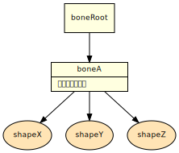

概要
ボーン圧縮は描画に不必要なボーンを削除、または結合を行う最適化です。この最適化により、バイナリーサイズを小さくして消費メモリーを節約、または描画時の演算コストを軽減できます。中間ファイルオプティマイザーを使ってモデル中間ファイルに対してボーン圧縮を適用できます。詳しい利用方法は中間ファイルオプティマイザーを参照してください。
このページでは各ボーン圧縮方式のアルゴリズムや注意点について解説します。
Cull ボーン圧縮
ボーン構造の末端に位置して、モデルの描画に関係の無いボーンを間引く圧縮です。Cull ボーン圧縮は、不均等スケール(x, y, z が同じ値ではないスケール)を設定するキャラクターモデルに使用します。
アルゴリズム
末端ボーンから親ボーンへ向かって、以下の条件に当てはまるボーンを削除します。
- 子ボーンを持たない
- ボーンが削減可能 (compress_enable="true")
- ボーンの行列をモデルの描画に使用していない(rigid_body="false" かつ matrix_index="-1 -1")
削除するボーンを参照しているシェイプは、ルートボーンを参照するように変更します。削除できるボーンがなくなるまで、繰り返し末端ボーンを削除します。最後に、ルートボーンの名称が DCC プラグインによりつけられた nw4f_root という名前であり、かつ nw4f_root が子ボーンをひとつしか持たない場合、nw4f_root を削除します。その際、nw4f_root を参照しているシェイプは、子ボーンを参照するように変更します。
|
赤色のボーンが削除対象 |
|
| 圧縮前 | 圧縮後 |
|---|
特定のボーンを削除したくない場合
モデルの描画に使用しないが削除したくないボーンは、DCC ツール上でボーンの compress_enable を false にします。設定方法については、各 DCC プラグインのヘルプを参照してください。
Cull ボーン圧縮を行うには fmd, fsk, fvb ファイルに対して、--compress-bone-cull オプションを指定してください。
Merge ボーン圧縮
Cull ボーン圧縮の処理に加え、ボーン構成の中で描画に不要なボーンをその親もしくは子ボーンと合成してひとつのボーンにまとめ、Cull ボーン圧縮よりもさらにボーン数を少なくします。ただし、モデルによっては、アニメーションデータが大きくなる場合もあります。Merge ボーン圧縮は、均等スケール(x, y, z が同じ値のスケール)のみを設定するキャラクターモデルに使用します。
アルゴリズム
Cull ボーン圧縮の処理を行い、不要な末端ボーンを削除します。ルートボーンから順にボーン構成をたどり、以下の条件に該当する二つのボーンがあればひとつにまとめます。
- 親と子の関係にある
- 親ボーンが削減可能 （compress_enable="true"）
- 親ボーンの行列がモデルの描画に使われていない（rigid_body="false" かつ matrix_index="-1 -1"）
ボーンをひとつにする際、二つのボーンの行列を乗算した行列から、新たに Scale, Rotate, Translate を算出します。 親ボーンが複数の子ボーンを持っている場合、それぞれの子ボーンに対して同様の処理を行います。削除できるボーンがなくなるまで、上記の処理を繰り返し行います。最後に、ルートとなるボーンが子ボーンをひとつしか持たず、削減可能で行列がモデルの描画に使われていない場合、そのボーンを削除します。 その際、ボーンを参照していたシェイプは子ボーンを参照するように変更します。

赤色のボーンが削除対象 |
|
| 圧縮前 | 圧縮後 |
|---|
ボーンを残したい場合
モデルの描画には使われないものの削除してほしくないボーンに対しては、compress_enable を false にしてください。
注意事項
この最適化で合成されるボーンは以下の制限を守らなければなりません。この制限が守られていないとモデルが正しく表示されない場合があります。
- 子を持つボーンに非均一な（スケール x, y, z が同じ値になっていない）スケールを設定してはいけません。
- まとめられるボーンは scale_compensate が false でなければなりません。scale_compensate が true の場合には、統合後の値は false に変更します。
- fsk ファイルの圧縮で binarize_scale、binarize_rotate、binarize_translate 属性が false の <bone_anim> を圧縮するとエラーになり動作を中断します。
Merge ボーン圧縮を行うには fmd, fsk, fvb ファイルに対して、--compress-bone-merge オプションを指定してください。
Unite Child ボーン圧縮
末端に位置するポリゴンを保持したボーンをひとつにまとめる方法です。 Cull ボーン圧縮もしくは Merge ボーン圧縮と併用することもできます。Unite Child ボーン圧縮は、リジッドボディーのパーツを持つキャラクターモデルに使用します。
アルゴリズム
末端ボーンから親ボーンへ向かって compress_enable が false になっているボーンを探索します。 compress_enable が false のボーン（ボーンＡとします）が見つかり、かつボーンＡより子階層に位置するすべてのボーンが以下の条件に当てはまれば、ボーンＡより下のすべてのボーンを削除します。
- ボーンを削除することが可能 （compress_enable="true"）。
- ボーンにスキニングのウェイトが付けられていない （matrix_index="-1 -1"）。
削除されるボーンを参照しているシェイプがあれば、そのシェイプがボーンＡを参照するように変更します。 その際、座標系が変わるため、頂点位置座標や法線ベクトルが変化します。
|
赤色のボーンが削除対象 |
|
| 圧縮前 | 圧縮後 |
|---|
Cull ボーン圧縮と併用した場合
|
赤色のボーンが削除対象 |
|
| 圧縮前 | 圧縮後 |
|---|
Merge ボーン圧縮と併用した場合
|
赤色のボーンが削除対象 |
|
| 圧縮前 | 圧縮後 |
|---|
注意事項
- fsk ファイルの圧縮で binarize_scale、binarize_rotate、binarize_translate 属性が false の <bone_anim> を圧縮するとエラーになり動作を中断します。
Unite Child ボーン圧縮を行うには fmd, fsk, fvb ファイルに対して、--compress-bone-unite-child オプションを指定してください。
Unite ボーン圧縮
圧縮可能なボーンをまとめる方法です。
圧縮可能なボーンは上位階層の圧縮禁止のボーンにまとめられます。圧縮禁止のボーンは削除されずに残り、スケルタルアニメーション、ボーンビジビリティーアニメーションを維持します。ただし、スキニングとの併用はできません。
Unite ボーン圧縮は、スケルタルアニメーションを一部に適用する地形データに使用します。
アルゴリズム
- ボーン圧縮後はルートボーンと圧縮禁止（compress_enable = "false"）が設定されたボーンだけが残ります。
- 圧縮可能（compress_enable = "true"）なボーンを参照しているシェイプは、ボーン階層の上位にある圧縮禁止のボーンを参照するように変更します。 上位に圧縮禁止のボーンが無い場合はルートボーンを参照するように変更します。
- 圧縮可能なボーンの座標変換とキャラクタアニメーションは下位階層の圧縮禁止のボーンに合成します(Merge ボーン圧縮と同様の処理を行います)。
- 圧縮禁止のボーンを参照しているシェイプは変更されません。
|
赤色のボーンが削除対象 |

|
| 圧縮前 | 圧縮後 |
|---|
注意事項
- 本最適化はスキニングモデルと併用できません。
- スキニングモデルはバインドポーズで固定されたリジッドボディーに変換し、ルートボーンを参照するように変更します。 これには圧縮禁止なボーンを参照していたスキニングモデルも含まれます。
- ルートボーンの座標変換は元のまま維持します（Unite All ボーン圧縮と異なり、単位行列化しません）。
- シェイプを上位階層のボーンを参照するように変更するとき、頂点座標と法線ベクトルを移動先のボーンの座標系に変換します。 このため複数のシェイプが頂点配列を共有していると、頂点配列のサイズが増加する場合があります。
頂点配列に適用される座標変換が各シェイプで同じになるように圧縮禁止のボーンを設定することで、サイズの増加を避けることができます。 - fsk ファイルの圧縮で binarize_scale、binarize_rotate、binarize_translate 属性が false の <bone_anim> を圧縮するとエラーになり動作を中断します。
Unite ボーン圧縮を行うには fmd, fsk, fvb ファイルに対して、--compress-bone-unite オプションを指定してください。
Unite All ボーン圧縮
モデルを構成するすべてのボーンをひとつにまとめる方法です。
Unite All ボーン圧縮は、スケルタルアニメーションの無い地形データに使用します。
アルゴリズム
compress_enable や rigid_body, matrix_index の設定に関わらず、ボーンはルートボーンひとつになります。
さらに、ルートボーンの行列は単位行列となります。すべてのシェイプはルートボーンを参照するように変更され、頂点位置座標と法線ベクトルをグローバル座標系に変換します。
|
赤色のボーンが削除対象 |

|
| 圧縮前 | 圧縮後 |
|---|
注意事項
- スキニングモデルはバインドポーズで固定されたリジッドボディーに変換します。
- fsk ファイルの圧縮で binarize_scale、binarize_rotate、binarize_translate 属性が false の <bone_anim> を圧縮するとエラーになり動作を中断します。
Unite All ボーン圧縮を行うには fmd, fsk, fvb ファイルに対して、--compress-bone-unite-all オプションを指定してください。
ボーン圧縮方式選択のヒント
各方式の特徴一覧
| ボーン圧縮方式 | 簡易説明 | スキニング |
非スキニングボーンの不均等スケール |
非スキニングボーンのスケルタルアニメーション |
ボーンビジビリティーアニメーション |
圧縮対象ボーン | 主な適用対象 |
|---|---|---|---|---|---|---|---|
| Cull | 細かな設定が不要だが圧縮率は低い | 可 | 可 | 可 | 一部要手動設定 | 末端のみ | キャラクターモデル |
| Merge | 少し細かな設定が必要だが、概ね不要なボーンを圧縮可能 | 可 | 一部要手動設定 | 可 |
一部要手動設定 |
末端＋中間 |
キャラクターモデル |
|
Unite Child (Cull, Merge と併用可) |
細かな設定が必要だが、うまく使えば無駄なボーンを最大限に圧縮可能 | 可 | 要手動設定 | 要手動設定 | 要手動設定 | 圧縮不可ボーン以下すべて | キャラクターモデル |
| Unite | 動的な地形モデル用 | 不可 | 要手動設定 | 要手動設定 | 要手動設定 | 圧縮不可ボーンを除くすべて | アニメーションする地形モデル |
| Unite All | 静的な地形モデル用 | 不可 | 不可 | 不可 | 不可 | ルートボーン以外すべて | アニメーションしない地形モデル |
圧縮方式選択のフローチャート
以下は入門者向けの圧縮方式選択のフローチャートです。データによる最適な方式の選び方はこの限りではありませんので、特徴一覧とあわせて参考情報として参照してください。